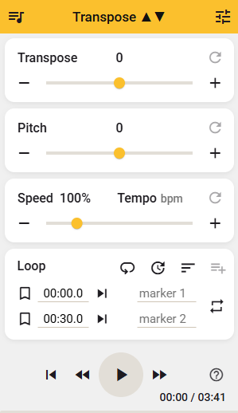

Transpose ▲▼ pitch ▹ speed ▹ loop for videos
Quick guide to the Google Chrome extension
Transpose ▲▼ pitch ▹ speed ▹ loop for videos is a free Google Chrome extension that allows you to adjust pitch, change speed, and loop segments of online music videos. This guide explains the installation, startup process, and key features of this extension.
Table of contents
Getting started
To install and launch the Transpose ▲▼ pitch ▹ speed ▹ loop for videos extension:
- Open Google Chrome.
- Click the icon and go to Extensions > Visit Chrome Web Store.
- Search for “transpose”.
- Select Transpose ▲▼ pitch ▹ speed ▹ loop for videos from the search results.
- Click Add to Chrome.
A confirmation window appears. - Confirm your choice by clicking Add Extension in the pop-up to add the extension to the browser.
- Open any website containing videos and click the icon on the taskbar to launch the application.
TIP: Click the icon on the browser's taskbar and pin Transpose ▲▼ pitch ▹ speed ▹ loop for videos to the taskbar if it is not there already.
Using the extension
- Open Google Chrome.
- Navigate to the desired video.
- Launch the extension by clicking the icon on the taskbar.
This opens the extension interface.

- Use the control panel at the bottom of the interface to:
- restart the video;
- rewind by 5 seconds;
- play / pause;
- fast-forward by 5 seconds.
- Adjust the settings as described in the following sections.
NOTE: You can modify settings while the video is playing or paused.
Transpose function
To change the key of the video, drag the Transpose slider or use the and buttons on its sides.
NOTE: One step corresponds to one semi-note.
Use the button to return to the default setting.
Pitch function
To fine-tune the pitch of the video, drag the Pitch slider or use the and buttons on its sides.
NOTE: With the and buttons, the increment is 0.05 step (approximately 1.3 Hz). Dragging the slider provides a precision of 0.01 step (approximately 0.3 Hz).
Use the button to return to the default setting.
Speed (Tempo) function
To adjust the video’s playback speed, drag the Speed slider or use the and buttons on its sides. You can set any value between 25% and 400%.
TIP: For precise tempo adjustment, enter the desired BPM value in the Tempo field.
Use the button to return to the default setting.
Loop function
- Open a video in your browser.
- Click the icon on the taskbar to launch the extension.
- Start the video using the play button in the extension interface.
- To define the start of a segment, click the icon while playing the video.
NOTE: You can modify the marker’s timestamp value; its format is MM:ss.s.
- Repeat the previous step to define the end of the segment.
When your second timestamp is defined, the segment starts to loop automatically. The two active timestamps are marked with , and the icon indicates active looping. - Click the icon to stop looping.
Additional loop options:
- Add a 3-second delay between loops with the icon.
- Add more markers with the icon.
- Sort your markers by time with the icon.
Marker operations:
- Assign custom names for your markers for easier navigation.
- Jump to a marker by clicking the icon next to its timestamp.
- Hover the cursor to the right side of an icon for the icon to appear; click it to delete the marker.
History
The extension automatically saves all your settings and markers. Click in the extension header to see the extension history.
To clear the extension history:
- Click in the extension header.
- Click the CLEAR ALL HISTORY button.
- Confirm your choice in the pop-up window.